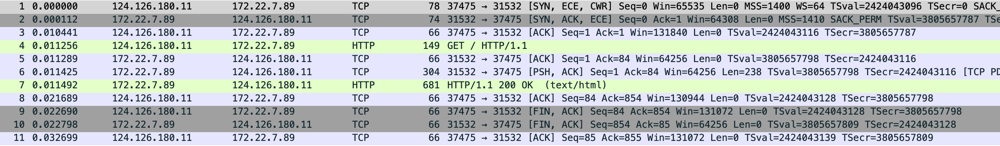
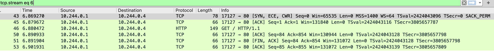
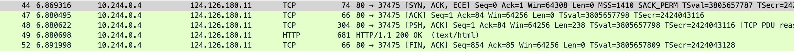
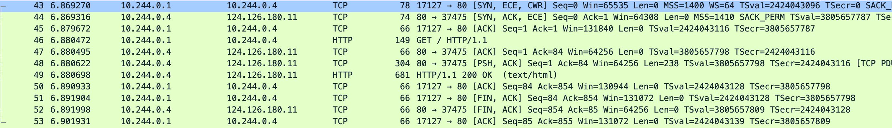
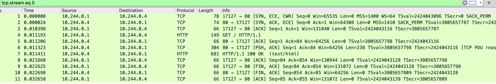
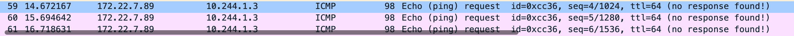
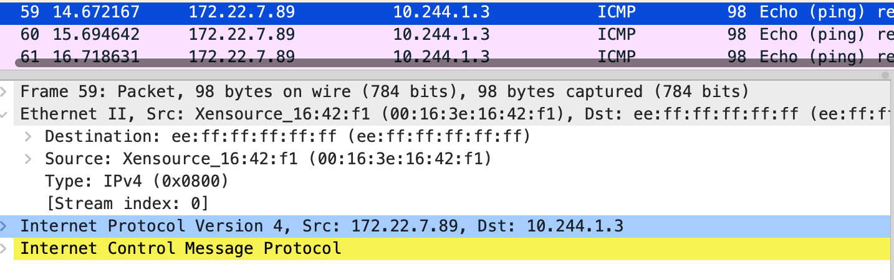
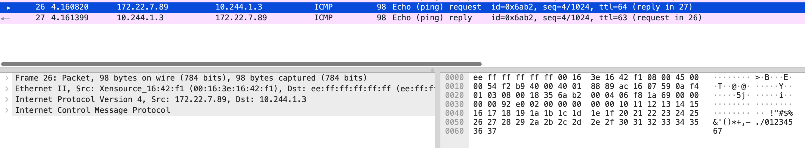

Kubeadm 部署
$ kubeadm init --cri-socket=unix:///run/cri-dockerd.sock --ignore-preflight-errors=mem --pod-network-cidr=10.244.0.0/16
$ kubectl taint nodes --all node-role.kubernetes.io/control-plane-
Service NodePort
入网
nginx deployment 单副本，service 为 nodeport
apiVersion: apps/v1
kind: Deployment
metadata:
name: web
namespace: default
spec:
replicas: 1
selector:
matchLabels:
app: nginx
template:
metadata:
labels:
app: nginx
spec:
containers:
- name: nginx
image: docker.1ms.run/nginx:stable
imagePullPolicy: IfNotPresent
ports:
- containerPort: 80
name: web
---
apiVersion: v1
kind: Service
metadata:
name: nginx
namespace: default
labels:
app: nginx
spec:
type: NodePort
ports:
- port: 80
nodePort: 31532
selector:
app: nginx
$ kubectl get pod -o wide
NAME READY STATUS RESTARTS AGE IP NODE NOMINATED NODE READINESS GATES
web-5846888f49-q4f9c 1/1 Running 0 151m 10.244.0.4 orange723 <none> <none>
$ kubectl get svc
NAME TYPE CLUSTER-IP EXTERNAL-IP PORT(S) AGE
kubernetes ClusterIP 10.96.0.1 <none> 443/TCP 150m
nginx NodePort 10.106.224.38 <none> 80:31532/TCP 146m
直接访问 service 地址 10.106.224.38 和 pod 地址 10.244.0.4，正常返回
$ curl -I 10.106.224.38
HTTP/1.1 200 OK
$ curl -I 10.244.0.4
HTTP/1.1 200 OK
从外部访问测试并分别抓 本机 eth0 cni0 和 pod 的 eth0 网卡
$ tcpdump -i eth0 -s0 -X -nn "tcp port 31532" -w eth0.pcap --print
eth0.pcap

$ tcpdump -s0 -X -nn -i cni0 -w cni0.pcap --print
cni0.pcap



$ tcpdump -i eth0 -s0 -X -nn -w nginx.pcap --print
nginx.pcap

先看 eth0 抓包文件，能看到本地和主机网卡建立连接，三次握手后直接发了 GET / 请求，cni0 抓包中是 10.244.0.1 向 0.4 发送的 GET /，0.1 ip 是 cni0 网卡地址 0.4 是容器的地址，然后 0.4 直接把内容返回给本地 socket 地址也能对应上 37475，最后 nginx 中的抓包则是只和 cni0 网卡通信。
根据抓包内容看出网 iptables：-A PREROUTING -m comment --comment "kubernetes service portals" -j KUBE-SERVICES >> -A KUBE-POSTROUTING -m comment --comment "kubernetes service traffic requiring SNAT" -j MASQUERADE --random-fully 因为不涉及跨主机，后面的 FLANNEL-POSTRTG 正常走一遍流量就返回了
贴下当前机器的 iptables 规则
$ iptables -S -t nat > rules.txt
-----------------------------------------------------------------
-P PREROUTING ACCEPT
-P INPUT ACCEPT
-P OUTPUT ACCEPT
-P POSTROUTING ACCEPT
-N DOCKER
-N FLANNEL-POSTRTG
-N KUBE-EXT-2CMXP7HKUVJN7L6M
-N KUBE-KUBELET-CANARY
-N KUBE-MARK-MASQ
-N KUBE-NODEPORTS
-N KUBE-POSTROUTING
-N KUBE-PROXY-CANARY
-N KUBE-SEP-6E7XQMQ4RAYOWTTM
-N KUBE-SEP-AAOCRVJBUI2XUHEI
-N KUBE-SEP-C3WRBSQHCDQ7BT6J
-N KUBE-SEP-IT2ZTR26TO4XFPTO
-N KUBE-SEP-N4G2XR5TDX7PQE7P
-N KUBE-SEP-YIL6JZP7A3QYXJU2
-N KUBE-SEP-ZP3FB6NMPNCO4VBJ
-N KUBE-SEP-ZXMNUKOKXUTL2MK2
-N KUBE-SERVICES
-N KUBE-SVC-2CMXP7HKUVJN7L6M
-N KUBE-SVC-ERIFXISQEP7F7OF4
-N KUBE-SVC-JD5MR3NA4I4DYORP
-N KUBE-SVC-NPX46M4PTMTKRN6Y
-N KUBE-SVC-TCOU7JCQXEZGVUNU
-A PREROUTING -m comment --comment "kubernetes service portals" -j KUBE-SERVICES
-A PREROUTING -m addrtype --dst-type LOCAL -j DOCKER
-A OUTPUT -m comment --comment "kubernetes service portals" -j KUBE-SERVICES
-A OUTPUT ! -d 127.0.0.0/8 -m addrtype --dst-type LOCAL -j DOCKER
-A POSTROUTING -m comment --comment "kubernetes postrouting rules" -j KUBE-POSTROUTING
-A POSTROUTING -s 172.17.0.0/16 ! -o docker0 -j MASQUERADE
-A POSTROUTING -m comment --comment "flanneld masq" -j FLANNEL-POSTRTG
-A FLANNEL-POSTRTG -m mark --mark 0x4000/0x4000 -m comment --comment "flanneld masq" -j RETURN
-A FLANNEL-POSTRTG -s 10.244.0.0/24 -d 10.244.0.0/16 -m comment --comment "flanneld masq" -j RETURN
-A FLANNEL-POSTRTG -s 10.244.0.0/16 -d 10.244.0.0/24 -m comment --comment "flanneld masq" -j RETURN
-A FLANNEL-POSTRTG ! -s 10.244.0.0/16 -d 10.244.0.0/24 -m comment --comment "flanneld masq" -j RETURN
-A FLANNEL-POSTRTG -s 10.244.0.0/16 ! -d 224.0.0.0/4 -m comment --comment "flanneld masq" -j MASQUERADE --random-fully
-A FLANNEL-POSTRTG ! -s 10.244.0.0/16 -d 10.244.0.0/16 -m comment --comment "flanneld masq" -j MASQUERADE --random-fully
-A KUBE-EXT-2CMXP7HKUVJN7L6M -m comment --comment "masquerade traffic for default/nginx external destinations" -j KUBE-MARK-MASQ
-A KUBE-EXT-2CMXP7HKUVJN7L6M -j KUBE-SVC-2CMXP7HKUVJN7L6M
-A KUBE-MARK-MASQ -j MARK --set-xmark 0x4000/0x4000
-A KUBE-NODEPORTS -d 127.0.0.0/8 -p tcp -m comment --comment "default/nginx" -m tcp --dport 31532 -m nfacct --nfacct-name localhost_nps_accepted_pkts -j KUBE-EXT-2CMXP7HKUVJN7L6M
-A KUBE-NODEPORTS -p tcp -m comment --comment "default/nginx" -m tcp --dport 31532 -j KUBE-EXT-2CMXP7HKUVJN7L6M
-A KUBE-POSTROUTING -m mark ! --mark 0x4000/0x4000 -j RETURN
-A KUBE-POSTROUTING -j MARK --set-xmark 0x4000/0x0
-A KUBE-POSTROUTING -m comment --comment "kubernetes service traffic requiring SNAT" -j MASQUERADE --random-fully
-A KUBE-SEP-6E7XQMQ4RAYOWTTM -s 10.244.0.3/32 -m comment --comment "kube-system/kube-dns:dns" -j KUBE-MARK-MASQ
-A KUBE-SEP-6E7XQMQ4RAYOWTTM -p udp -m comment --comment "kube-system/kube-dns:dns" -m udp -j DNAT --to-destination 10.244.0.3:53
-A KUBE-SEP-AAOCRVJBUI2XUHEI -s 10.244.0.4/32 -m comment --comment "default/nginx" -j KUBE-MARK-MASQ
-A KUBE-SEP-AAOCRVJBUI2XUHEI -p tcp -m comment --comment "default/nginx" -m tcp -j DNAT --to-destination 10.244.0.4:80
-A KUBE-SEP-C3WRBSQHCDQ7BT6J -s 172.22.7.89/32 -m comment --comment "default/kubernetes:https" -j KUBE-MARK-MASQ
-A KUBE-SEP-C3WRBSQHCDQ7BT6J -p tcp -m comment --comment "default/kubernetes:https" -m tcp -j DNAT --to-destination 172.22.7.89:6443
-A KUBE-SEP-IT2ZTR26TO4XFPTO -s 10.244.0.2/32 -m comment --comment "kube-system/kube-dns:dns-tcp" -j KUBE-MARK-MASQ
-A KUBE-SEP-IT2ZTR26TO4XFPTO -p tcp -m comment --comment "kube-system/kube-dns:dns-tcp" -m tcp -j DNAT --to-destination 10.244.0.2:53
-A KUBE-SEP-N4G2XR5TDX7PQE7P -s 10.244.0.2/32 -m comment --comment "kube-system/kube-dns:metrics" -j KUBE-MARK-MASQ
-A KUBE-SEP-N4G2XR5TDX7PQE7P -p tcp -m comment --comment "kube-system/kube-dns:metrics" -m tcp -j DNAT --to-destination 10.244.0.2:9153
-A KUBE-SEP-YIL6JZP7A3QYXJU2 -s 10.244.0.2/32 -m comment --comment "kube-system/kube-dns:dns" -j KUBE-MARK-MASQ
-A KUBE-SEP-YIL6JZP7A3QYXJU2 -p udp -m comment --comment "kube-system/kube-dns:dns" -m udp -j DNAT --to-destination 10.244.0.2:53
-A KUBE-SEP-ZP3FB6NMPNCO4VBJ -s 10.244.0.3/32 -m comment --comment "kube-system/kube-dns:metrics" -j KUBE-MARK-MASQ
-A KUBE-SEP-ZP3FB6NMPNCO4VBJ -p tcp -m comment --comment "kube-system/kube-dns:metrics" -m tcp -j DNAT --to-destination 10.244.0.3:9153
-A KUBE-SEP-ZXMNUKOKXUTL2MK2 -s 10.244.0.3/32 -m comment --comment "kube-system/kube-dns:dns-tcp" -j KUBE-MARK-MASQ
-A KUBE-SEP-ZXMNUKOKXUTL2MK2 -p tcp -m comment --comment "kube-system/kube-dns:dns-tcp" -m tcp -j DNAT --to-destination 10.244.0.3:53
-A KUBE-SERVICES -d 10.96.0.1/32 -p tcp -m comment --comment "default/kubernetes:https cluster IP" -m tcp --dport 443 -j KUBE-SVC-NPX46M4PTMTKRN6Y
-A KUBE-SERVICES -d 10.96.0.10/32 -p tcp -m comment --comment "kube-system/kube-dns:metrics cluster IP" -m tcp --dport 9153 -j KUBE-SVC-JD5MR3NA4I4DYORP
-A KUBE-SERVICES -d 10.96.0.10/32 -p udp -m comment --comment "kube-system/kube-dns:dns cluster IP" -m udp --dport 53 -j KUBE-SVC-TCOU7JCQXEZGVUNU
-A KUBE-SERVICES -d 10.96.0.10/32 -p tcp -m comment --comment "kube-system/kube-dns:dns-tcp cluster IP" -m tcp --dport 53 -j KUBE-SVC-ERIFXISQEP7F7OF4
-A KUBE-SERVICES -d 10.106.224.38/32 -p tcp -m comment --comment "default/nginx cluster IP" -m tcp --dport 80 -j KUBE-SVC-2CMXP7HKUVJN7L6M
-A KUBE-SERVICES -m comment --comment "kubernetes service nodeports; NOTE: this must be the last rule in this chain" -m addrtype --dst-type LOCAL -j KUBE-NODEPORTS
-A KUBE-SVC-2CMXP7HKUVJN7L6M ! -s 10.244.0.0/16 -d 10.106.224.38/32 -p tcp -m comment --comment "default/nginx cluster IP" -m tcp --dport 80 -j KUBE-MARK-MASQ
-A KUBE-SVC-2CMXP7HKUVJN7L6M -m comment --comment "default/nginx -> 10.244.0.4:80" -j KUBE-SEP-AAOCRVJBUI2XUHEI
-A KUBE-SVC-ERIFXISQEP7F7OF4 ! -s 10.244.0.0/16 -d 10.96.0.10/32 -p tcp -m comment --comment "kube-system/kube-dns:dns-tcp cluster IP" -m tcp --dport 53 -j KUBE-MARK-MASQ
-A KUBE-SVC-ERIFXISQEP7F7OF4 -m comment --comment "kube-system/kube-dns:dns-tcp -> 10.244.0.2:53" -m statistic --mode random --probability 0.50000000000 -j KUBE-SEP-IT2ZTR26TO4XFPTO
-A KUBE-SVC-ERIFXISQEP7F7OF4 -m comment --comment "kube-system/kube-dns:dns-tcp -> 10.244.0.3:53" -j KUBE-SEP-ZXMNUKOKXUTL2MK2
-A KUBE-SVC-JD5MR3NA4I4DYORP ! -s 10.244.0.0/16 -d 10.96.0.10/32 -p tcp -m comment --comment "kube-system/kube-dns:metrics cluster IP" -m tcp --dport 9153 -j KUBE-MARK-MASQ
-A KUBE-SVC-JD5MR3NA4I4DYORP -m comment --comment "kube-system/kube-dns:metrics -> 10.244.0.2:9153" -m statistic --mode random --probability 0.50000000000 -j KUBE-SEP-N4G2XR5TDX7PQE7P
-A KUBE-SVC-JD5MR3NA4I4DYORP -m comment --comment "kube-system/kube-dns:metrics -> 10.244.0.3:9153" -j KUBE-SEP-ZP3FB6NMPNCO4VBJ
-A KUBE-SVC-NPX46M4PTMTKRN6Y ! -s 10.244.0.0/16 -d 10.96.0.1/32 -p tcp -m comment --comment "default/kubernetes:https cluster IP" -m tcp --dport 443 -j KUBE-MARK-MASQ
-A KUBE-SVC-NPX46M4PTMTKRN6Y -m comment --comment "default/kubernetes:https -> 172.22.7.89:6443" -j KUBE-SEP-C3WRBSQHCDQ7BT6J
-A KUBE-SVC-TCOU7JCQXEZGVUNU ! -s 10.244.0.0/16 -d 10.96.0.10/32 -p udp -m comment --comment "kube-system/kube-dns:dns cluster IP" -m udp --dport 53 -j KUBE-MARK-MASQ
-A KUBE-SVC-TCOU7JCQXEZGVUNU -m comment --comment "kube-system/kube-dns:dns -> 10.244.0.2:53" -m statistic --mode random --probability 0.50000000000 -j KUBE-SEP-YIL6JZP7A3QYXJU2
-A KUBE-SVC-TCOU7JCQXEZGVUNU -m comment --comment "kube-system/kube-dns:dns -> 10.244.0.3:53" -j KUBE-SEP-6E7XQMQ4RAYOWTTM
看下 31532 端口是否有监听，查看是空的
$ netstat -lnpt|grep 31532
先看 PREROUTING，跳转到 KUBE-SERVICES
-A PREROUTING -m comment --comment "kubernetes service portals" -j KUBE-SERVICES
-A PREROUTING -m addrtype --dst-type LOCAL -j DOCKER
KUBE-SERVICES 从外部访问目的地址不是 10.106.224.38，只有最后一条匹配
-A KUBE-SERVICES -d 10.96.0.1/32 -p tcp -m comment --comment "default/kubernetes:https cluster IP" -m tcp --dport 443 -j KUBE-SVC-NPX46M4PTMTKRN6Y
-A KUBE-SERVICES -d 10.96.0.10/32 -p tcp -m comment --comment "kube-system/kube-dns:metrics cluster IP" -m tcp --dport 9153 -j KUBE-SVC-JD5MR3NA4I4DYORP
-A KUBE-SERVICES -d 10.96.0.10/32 -p udp -m comment --comment "kube-system/kube-dns:dns cluster IP" -m udp --dport 53 -j KUBE-SVC-TCOU7JCQXEZGVUNU
-A KUBE-SERVICES -d 10.96.0.10/32 -p tcp -m comment --comment "kube-system/kube-dns:dns-tcp cluster IP" -m tcp --dport 53 -j KUBE-SVC-ERIFXISQEP7F7OF4
-A KUBE-SERVICES -d 10.106.224.38/32 -p tcp -m comment --comment "default/nginx cluster IP" -m tcp --dport 80 -j KUBE-SVC-2CMXP7HKUVJN7L6M
-A KUBE-SERVICES -m comment --comment "kubernetes service nodeports; NOTE: this must be the last rule in this chain" -m addrtype --dst-type LOCAL -j KUBE-NODEPORTS
KUBE-NODEPORTS，第二条规则能看到设置的 nodeport 端口 31532
-A KUBE-NODEPORTS -d 127.0.0.0/8 -p tcp -m comment --comment "default/nginx" -m tcp --dport 31532 -m nfacct --nfacct-name localhost_nps_accepted_pkts -j KUBE-EXT-2CMXP7HKUVJN7L6M
-A KUBE-NODEPORTS -p tcp -m comment --comment "default/nginx" -m tcp --dport 31532 -j KUBE-EXT-2CMXP7HKUVJN7L6M
KUBE-EXT-2CMXP7HKUVJN7L6M，先看第二条跳转到 KUBE-SVC-2CMXP7HKUVJN7L6M
-A KUBE-EXT-2CMXP7HKUVJN7L6M -m comment --comment "masquerade traffic for default/nginx external destinations" -j KUBE-MARK-MASQ
-A KUBE-EXT-2CMXP7HKUVJN7L6M -j KUBE-SVC-2CMXP7HKUVJN7L6M
KUBE-SVC-2CMXP7HKUVJN7L6M，第一条是源地址不是 10.244.0.0 目的地址是 10.106.224.38 走到 KUBE-MARK-MASQ，看第二条跳转到 KUBE-SEP-AAOCRVJBUI2XUHEI
-A KUBE-SVC-2CMXP7HKUVJN7L6M ! -s 10.244.0.0/16 -d 10.106.224.38/32 -p tcp -m comment --comment "default/nginx cluster IP" -m tcp --dport 80 -j KUBE-MARK-MASQ
-A KUBE-SVC-2CMXP7HKUVJN7L6M -m comment --comment "default/nginx -> 10.244.0.4:80" -j KUBE-SEP-AAOCRVJBUI2XUHEI
KUBE-SEP-AAOCRVJBUI2XUHEI，第一条源地址是 10.244.0.4(容器的地址)跳到 KUBE-MARK-MASQ 去做标记，第二条做了一个 dnat 目的地址是 10.244.0.4:80 就是容器 nginx 的地址
-A KUBE-SEP-AAOCRVJBUI2XUHEI -s 10.244.0.4/32 -m comment --comment "default/nginx" -j KUBE-MARK-MASQ
-A KUBE-SEP-AAOCRVJBUI2XUHEI -p tcp -m comment --comment "default/nginx" -m tcp -j DNAT --to-destination 10.244.0.4:80
出网
这里把 iptables 规则里关于出网的规则整理下。
首先第一条 POSTROUTING 跳转到 KUBE-POSTROUTING，从 pod 到外部网络的包会匹配后两条规则 -A KUBE-POSTROUTING -j MARK --set-xmark 0x4000/0x0 标记，-A KUBE-POSTROUTING -m comment --comment "kubernetes service traffic requiring SNAT" -j MASQUERADE --random-fully 走 snat 变更源地址和随机端口，后面走 FLANNEL-POSTRTG 都没有匹配就正常返回到本机。
-A POSTROUTING -m comment --comment "kubernetes postrouting rules" -j KUBE-POSTROUTING
-A POSTROUTING -s 172.17.0.0/16 ! -o docker0 -j MASQUERADE
-A POSTROUTING -m comment --comment "flanneld masq" -j FLANNEL-POSTRTG
-A FLANNEL-POSTRTG -m mark --mark 0x4000/0x4000 -m comment --comment "flanneld masq" -j RETURN
-A FLANNEL-POSTRTG -s 10.244.0.0/24 -d 10.244.0.0/16 -m comment --comment "flanneld masq" -j RETURN
-A FLANNEL-POSTRTG -s 10.244.0.0/16 -d 10.244.0.0/24 -m comment --comment "flanneld masq" -j RETURN
-A FLANNEL-POSTRTG ! -s 10.244.0.0/16 -d 10.244.0.0/24 -m comment --comment "flanneld masq" -j RETURN
-A FLANNEL-POSTRTG -s 10.244.0.0/16 ! -d 224.0.0.0/4 -m comment --comment "flanneld masq" -j MASQUERADE --random-fully
-A FLANNEL-POSTRTG ! -s 10.244.0.0/16 -d 10.244.0.0/16 -m comment --comment "flanneld masq" -j MASQUERADE --random-fully
-A KUBE-POSTROUTING -m mark ! --mark 0x4000/0x4000 -j RETURN
-A KUBE-POSTROUTING -j MARK --set-xmark 0x4000/0x0
-A KUBE-POSTROUTING -m comment --comment "kubernetes service traffic requiring SNAT" -j MASQUERADE --random-fully
这里关于 --set-xmark 不清晰，也不去管这个到底是做什么的，后面有查到相关资料在补充，直接通过外网访问，看具体哪个 POSTROUTING 规则的包会增加就能知道流量走的那个规则。
在 深入剖析 Kubernetes 中有解释
-A KUBE-POSTROUTING -m comment --comment "kubernetes service traffic requiring SNAT" -m mark --mark 0x4000/0x4000 -j MASQUERADE 这条规则设置在 POSTROUTING 检查点，也就是说，它给即将离开这台主机的 IP 包，进行了一次 SNAT 操作，将这个 IP 包的源地址替换成了这台宿主机上的 CNI 网桥地址，或者宿主机本身的 IP 地址（如果 CNI 网桥不存在的话）。当然，这个 SNAT 操作只需要对 Service 转发出来的 IP 包进行（否则普通的 IP 包就被影响了）。而 iptables 做这个判断的依据，就是查看该 IP 包是否有一个“0x4000”的“标志”。你应该还记得，这个标志正是在 IP 包被执行 DNAT 操作之前被打上去的。
$ while true;do curl 101.200.150.26:31532;done
前后对比，能看到 KUBE-POSTROUTING 的 bytes 有变化，FLANNEL-POSTRTG 包很少，pkts 包总数在 1054 分别在 KUBE-MARK-MASQ 和 KUBE-POSTROUTING 两个 chain 里有对应数值。
$ iptables -t nat -L -nvx
-----------------------------------------------------------------
Chain POSTROUTING (policy ACCEPT 132636 packets, 8059995 bytes)
pkts bytes target prot opt in out source destination
127270 7723952 KUBE-POSTROUTING 0 -- * * 0.0.0.0/0 0.0.0.0/0 /* kubernetes postrouting rules */
0 0 MASQUERADE 0 -- * !docker0 172.17.0.0/16 0.0.0.0/0
120845 7318694 FLANNEL-POSTRTG 0 -- * * 0.0.0.0/0 0.0.0.0/0 /* flanneld masq */
Chain FLANNEL-POSTRTG (1 references)
pkts bytes target prot opt in out source destination
0 0 RETURN 0 -- * * 0.0.0.0/0 0.0.0.0/0 mark match 0x4000/0x4000 /* flanneld masq */
11999 720208 RETURN 0 -- * * 10.244.0.0/24 10.244.0.0/16 /* flanneld masq */
0 0 RETURN 0 -- * * 10.244.0.0/16 10.244.0.0/24 /* flanneld masq */
0 0 RETURN 0 -- * * !10.244.0.0/16 10.244.0.0/24 /* flanneld masq */
14 908 MASQUERADE 0 -- * * 10.244.0.0/16 !224.0.0.0/4 /* flanneld masq */ random-fully
0 0 MASQUERADE 0 -- * * !10.244.0.0/16 10.244.0.0/16 /* flanneld masq */ random-fully
Chain KUBE-MARK-MASQ (14 references)
pkts bytes target prot opt in out source destination
1 64 MARK 0 -- * * 0.0.0.0/0 0.0.0.0/0 MARK or 0x4000
Chain KUBE-POSTROUTING (1 references)
pkts bytes target prot opt in out source destination
3513 212636 RETURN 0 -- * * 0.0.0.0/0 0.0.0.0/0 mark match ! 0x4000/0x4000
1 64 MARK 0 -- * * 0.0.0.0/0 0.0.0.0/0 MARK xor 0x4000
1 64 MASQUERADE 0 -- * * 0.0.0.0/0 0.0.0.0/0 /* kubernetes service traffic requiring SNAT */ random-fully
-----------------------------------------------------------------
Chain POSTROUTING (policy ACCEPT 133177 packets, 8092725 bytes)
pkts bytes target prot opt in out source destination
128864 7824074 KUBE-POSTROUTING 0 -- * * 0.0.0.0/0 0.0.0.0/0 /* kubernetes postrouting rules */
0 0 MASQUERADE 0 -- * !docker0 172.17.0.0/16 0.0.0.0/0
121386 7351424 FLANNEL-POSTRTG 0 -- * * 0.0.0.0/0 0.0.0.0/0 /* flanneld masq */
Chain FLANNEL-POSTRTG (1 references)
pkts bytes target prot opt in out source destination
0 0 RETURN 0 -- * * 0.0.0.0/0 0.0.0.0/0 mark match 0x4000/0x4000 /* flanneld masq */
12051 723328 RETURN 0 -- * * 10.244.0.0/24 10.244.0.0/16 /* flanneld masq */
0 0 RETURN 0 -- * * 10.244.0.0/16 10.244.0.0/24 /* flanneld masq */
0 0 RETURN 0 -- * * !10.244.0.0/16 10.244.0.0/24 /* flanneld masq */
14 908 MASQUERADE 0 -- * * 10.244.0.0/16 !224.0.0.0/4 /* flanneld masq */ random-fully
0 0 MASQUERADE 0 -- * * !10.244.0.0/16 10.244.0.0/16 /* flanneld masq */ random-fully
Chain KUBE-MARK-MASQ (14 references)
pkts bytes target prot opt in out source destination
1054 67456 MARK 0 -- * * 0.0.0.0/0 0.0.0.0/0 MARK or 0x4000
Chain KUBE-POSTROUTING (1 references)
pkts bytes target prot opt in out source destination
4054 245366 RETURN 0 -- * * 0.0.0.0/0 0.0.0.0/0 mark match ! 0x4000/0x4000
1054 67456 MARK 0 -- * * 0.0.0.0/0 0.0.0.0/0 MARK xor 0x4000
1054 67456 MASQUERADE 0 -- * * 0.0.0.0/0 0.0.0.0/0 /* kubernetes service traffic requiring SNAT */ random-fully
Kube-Proxy ipvs
$ apt install ipvsadm ipset
# 手动加载常用模块
modprobe ip_vs
modprobe ip_vs_rr # 轮询调度算法
modprobe ip_vs_wrr # 加权轮询
modprobe ip_vs_sh # 源哈希
modprobe nf_conntrack_ipv4 # 连接跟踪（若用 IPv4）
直接用 kubeadm 初始化
apiVersion: kubeadm.k8s.io/v1beta4
kind: InitConfiguration
nodeRegistration:
criSocket: unix:///run/cri-dockerd.sock
---
apiVersion: kubeadm.k8s.io/v1beta4
kind: ClusterConfiguration
networking:
serviceSubnet: 10.244.0.0/16
---
apiVersion: kubeproxy.config.k8s.io/v1alpha1
kind: KubeProxyConfiguration
mode: ipvs
$ kubeadm init --config=init.yml --ignore-preflight-errors=mem
$ ipvsadm -Ln
IP Virtual Server version 1.2.1 (size=4096)
Prot LocalAddress:Port Scheduler Flags
-> RemoteAddress:Port Forward Weight ActiveConn InActConn
TCP 172.17.0.1:31532 rr
-> 10.244.0.4:80 Masq 1 0 0
TCP 172.22.7.89:31532 rr
-> 10.244.0.4:80 Masq 1 0 0
TCP 10.244.0.0:31532 rr
-> 10.244.0.4:80 Masq 1 0 0
TCP 10.244.0.1:443 rr
-> 172.22.7.89:6443 Masq 1 3 0
TCP 10.244.0.1:31532 rr
-> 10.244.0.4:80 Masq 1 0 0
TCP 10.244.0.10:53 rr
-> 10.244.0.2:53 Masq 1 0 0
-> 10.244.0.3:53 Masq 1 0 0
TCP 10.244.0.10:9153 rr
-> 10.244.0.2:9153 Masq 1 0 0
-> 10.244.0.3:9153 Masq 1 0 0
TCP 10.244.142.146:80 rr
-> 10.244.0.4:80 Masq 1 0 0
UDP 10.244.0.10:53 rr
-> 10.244.0.2:53 Masq 1 0 0
-> 10.244.0.3:53 Masq 1 0 0
在看下改为 ipvs 后的 iptables 规则有什么变化
$ iptables -S -t nat > ipvsrules.txt
-----------------------------------------------------------------
-P PREROUTING ACCEPT
-P INPUT ACCEPT
-P OUTPUT ACCEPT
-P POSTROUTING ACCEPT
-N FLANNEL-POSTRTG
-N KUBE-KUBELET-CANARY
-N KUBE-LOAD-BALANCER
-N KUBE-MARK-MASQ
-N KUBE-NODE-PORT
-N KUBE-POSTROUTING
-N KUBE-SERVICES
-A PREROUTING -m comment --comment "kubernetes service portals" -j KUBE-SERVICES
-A OUTPUT -m comment --comment "kubernetes service portals" -j KUBE-SERVICES
-A POSTROUTING -m comment --comment "kubernetes postrouting rules" -j KUBE-POSTROUTING
-A POSTROUTING -m comment --comment "flanneld masq" -j FLANNEL-POSTRTG
-A FLANNEL-POSTRTG -m mark --mark 0x4000/0x4000 -m comment --comment "flanneld masq" -j RETURN
-A FLANNEL-POSTRTG -s 10.244.0.0/24 -d 10.244.0.0/16 -m comment --comment "flanneld masq" -j RETURN
-A FLANNEL-POSTRTG -s 10.244.0.0/16 -d 10.244.0.0/24 -m comment --comment "flanneld masq" -j RETURN
-A FLANNEL-POSTRTG ! -s 10.244.0.0/16 -d 10.244.0.0/24 -m comment --comment "flanneld masq" -j RETURN
-A FLANNEL-POSTRTG -s 10.244.0.0/16 ! -d 224.0.0.0/4 -m comment --comment "flanneld masq" -j MASQUERADE --random-fully
-A FLANNEL-POSTRTG ! -s 10.244.0.0/16 -d 10.244.0.0/16 -m comment --comment "flanneld masq" -j MASQUERADE --random-fully
-A KUBE-LOAD-BALANCER -j KUBE-MARK-MASQ
-A KUBE-MARK-MASQ -j MARK --set-xmark 0x4000/0x4000
-A KUBE-NODE-PORT -p tcp -m comment --comment "Kubernetes nodeport TCP port for masquerade purpose" -m set --match-set KUBE-NODE-PORT-TCP dst -j KUBE-MARK-MASQ
-A KUBE-POSTROUTING -m comment --comment "Kubernetes endpoints dst ip:port, source ip for solving hairpin purpose" -m set --match-set KUBE-LOOP-BACK dst,dst,src -j MASQUERADE
-A KUBE-POSTROUTING -m mark ! --mark 0x4000/0x4000 -j RETURN
-A KUBE-POSTROUTING -j MARK --set-xmark 0x4000/0x0
-A KUBE-POSTROUTING -m comment --comment "kubernetes service traffic requiring SNAT" -j MASQUERADE --random-fully
-A KUBE-SERVICES -s 127.0.0.0/8 -j RETURN
-A KUBE-SERVICES -m comment --comment "Kubernetes service cluster ip + port for masquerade purpose" -m set --match-set KUBE-CLUSTER-IP src,dst -j KUBE-MARK-MASQ
-A KUBE-SERVICES -m addrtype --dst-type LOCAL -j KUBE-NODE-PORT
-A KUBE-SERVICES -m set --match-set KUBE-CLUSTER-IP dst,dst -j ACCEPT
Awkee/Netfilter-IPTables-Diagrams.md
comparing-kube-proxy-modes-iptables-or-ipvs
Flannel vxlan
两个 node 的集群，nginx 启动了两个
$ kubectl get node -o wide
NAME STATUS ROLES AGE VERSION INTERNAL-IP EXTERNAL-IP OS-IMAGE KERNEL-VERSION CONTAINER-RUNTIME
orange723 Ready control-plane 3h24m v1.34.2 172.22.7.89 <none> Ubuntu 24.04.3 LTS 6.8.0-87-generic docker://29.0.1
orange723-node Ready <none> 30m v1.34.2 172.22.7.90 <none> Ubuntu 24.04.3 LTS 6.8.0-87-generic docker://29.0.1
-----------------------------------------------------------------
$ kubectl get pod -o wide
NAME READY STATUS RESTARTS AGE IP NODE NOMINATED NODE READINESS GATES
web-5846888f49-bd5lx 1/1 Running 0 12m 10.244.1.2 orange723-node <none> <none>
web-5846888f49-fx7bc 1/1 Running 0 3h6m 10.244.0.4 orange723 <none> <none>
master 主机抓取 eth0 网卡
$ tcpdump -s0 -X -nn -i eth0 "tcp port not 22" -w flannel-1-vxlan.pcap --print
flannel-1-vxlan.pcap

能看到在建立连接没有发送数据时，一个容器的包被 udp 包了一层里面是 vxlan，最外层是宿主机正常的 ip 包。
贴下 route -n 的内容后面可以和 host-gw 模式做对比
$ route -n
Kernel IP routing table
Destination Gateway Genmask Flags Metric Ref Use Iface
0.0.0.0 172.22.15.253 0.0.0.0 UG 100 0 0 eth0
10.244.0.0 0.0.0.0 255.255.255.0 U 0 0 0 cni0
10.244.1.0 10.244.1.0 255.255.255.0 UG 0 0 0 flannel.1
100.100.2.136 172.22.15.253 255.255.255.255 UGH 100 0 0 eth0
100.100.2.138 172.22.15.253 255.255.255.255 UGH 100 0 0 eth0
172.17.0.0 0.0.0.0 255.255.0.0 U 0 0 0 docker0
172.22.0.0 0.0.0.0 255.255.240.0 U 100 0 0 eth0
172.22.15.253 0.0.0.0 255.255.255.255 UH 100 0 0 eth0
Ethernet head 默认是 14 bytes Ethernet_frame
flannel vxlan 模式可以参照这篇文章 深入解析容器跨主机网络

图片来源：深入剖析 Kubernetes
Flannel host-gw
直接修改 kube-flannel namespace 里 kube-flannel-cfg 的 configmap，然后重启 daemonset
$ kubectl get cm kube-flannel-cfg -o yaml|grep host-gw
"Type": "host-gw"
$ kubectl rollout restart ds kube-flannel-ds -n kube-flannel
可以从 log 里看到 Backend type 是 host-gw
I1117 09:10:11.315220 1 main.go:523] Found network config - Backend type: host-gw
在看路由信息，去往另一台机器的 10.244.1.0 网关成了 172.22.7.90 网卡是 eth0，这个 ip 就是另一台 node 的 ip
$ route -n
Kernel IP routing table
Destination Gateway Genmask Flags Metric Ref Use Iface
0.0.0.0 172.22.15.253 0.0.0.0 UG 100 0 0 eth0
10.244.0.0 0.0.0.0 255.255.255.0 U 0 0 0 cni0
10.244.1.0 172.22.7.90 255.255.255.0 UG 0 0 0 eth0
100.100.2.136 172.22.15.253 255.255.255.255 UGH 100 0 0 eth0
100.100.2.138 172.22.15.253 255.255.255.255 UGH 100 0 0 eth0
172.17.0.0 0.0.0.0 255.255.0.0 U 0 0 0 docker0
172.22.0.0 0.0.0.0 255.255.240.0 U 100 0 0 eth0
172.22.15.253 0.0.0.0 255.255.255.255 UH 100 0 0 eth0
这里去 ping 10.244.1.3 另一台的机器上的 pod 发现不通，抓包下，能看到目的 mac 是 ee:ff:ff:ff:ff:ff，云上主机二层网络是不通的，ping 10.244.1.3 走的路由是 10.244.1.0 172.22.7.90 255.255.255.0 UG 0 0 0 eth0 搜索发现 host-gw-in-aliyun，通过在 vpc 自定义路由添加两条规则 本机的 pod cidr 下一跳是这台 ecs，有几个主机添加几个，之后就可以直接连通了。
$ tcpdump -s0 -X -nn -i eth0 "tcp port not 22" -w flannel-1-ping-noresponse.pcap --print
flannel-1-ping-noreponse.pcap


$ arp -n
Address HWtype HWaddress Flags Mask Iface
10.244.0.5 ether 46:33:68:6a:43:bb C cni0
10.244.0.6 ether 46:e3:5c:54:ea:35 C cni0
10.244.0.7 ether 02:dd:96:54:61:7f C cni0
172.22.7.90 ether ee:ff:ff:ff:ff:ff C eth0
172.22.15.253 ether ee:ff:ff:ff:ff:ff C eth0
$ tcpdump -s0 -X -nn -i eth0 "tcp port not 22" -w flannel-1-hostgw-ping.pcap --print
flannel-1-hostgw-ping.pcap
